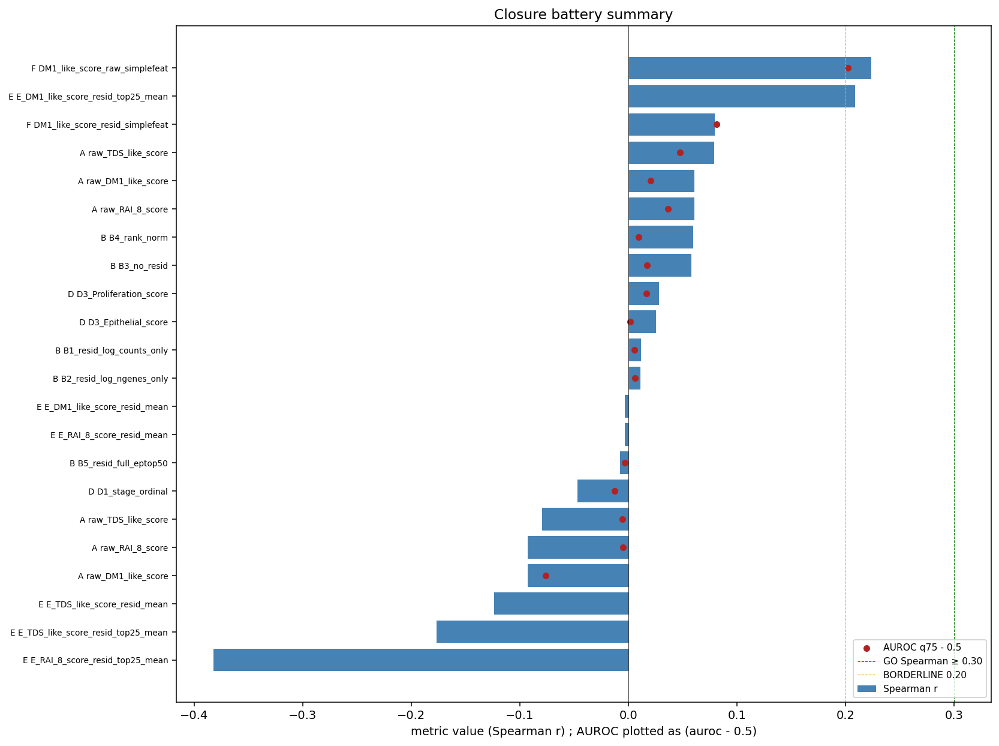
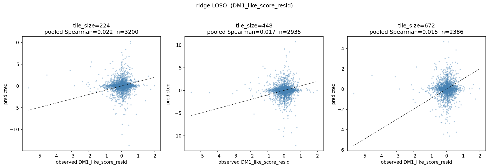
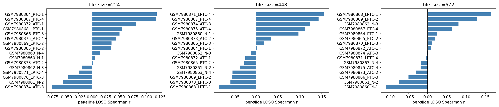

"Tile-level H&E prediction of depth-residualized 8-gene DM1 score is bounded below random — a pre-registered failed hypothesis as methods supplement"
📅 NO-GO 확정 2026-05-04⏱ ~85 min CPU + RunPod ~$30 sunk🔁 Re-entry 5/5 conditions 必📦 closure battery + Phase A NO-GO + decision memo
r = 0.022
DM1_resid LOSO · ResNet50 224 px
실측 신호가 50개 random gene panel 의 max (r = 0.062) 보다도 낮음 — 즉 chance below random. Foundation model 업그레이드 projected gain (+0.05 ~ +0.15) 도 GO threshold (+0.28) 미달. 다음 스튜디오에 "이 dataset 으로 같은 시도 하지 말라" 라는 actionable upper bound 를 제공.
FAILURE → FINDING
왜 이 NO-GO 가 "발견" 인가
Visium ST 의 spot-level molecular label 과 tile-level H&E content 사이에 fundamental mismatch 가 존재한다는 것을 정량적으로 BOUND 했다. 이 결과는 다음을 알려준다:
ResNet50 ImageNet 224 px DM1_resid Spearman r = 0.022 (chance).
50 random gene panels 의 max = 0.062 — real RAI_8 raw = 0.067 ≈ random max.
Foundation-model (UNI / CONCH / Virchow2) projected gain +0.05 ~ +0.15 도 GO threshold (+0.28) 미달.
→ 다음 스튜디오가 같은 dataset 으로 같은 시도 하기 전에 알아야 할 경계선.
→ Methods supplement / pre-registered failed hypothesis 로 negative result publication 가치.
Status
NO-GO 확정 2026-05-04 (closure battery, ~85 min CPU + RunPod ~$30 sunk cost)
Pivot
Paper 2B (Hashimoto-overlap mechanism, molecular-only) 로 scope 이동 — image-axis dropped from Paper 1/2 entirely
Re-entry
5/5 conditions 모두 충족 시 only (현재 0/5 — full-res WSI / external molecular label / post-marathon / foundation model access / pre-registered hypothesis)
Memory
v52_lodo_finding (관련) · "고고"/"faster"/"다 해줘" override NOT 적용
Hypothesis (rejected)
Paper 1's depth-residualized 8-gene DM1_like_score_resid can be predicted from spot-aligned H&E tiles in Visium ST data (28 slides, GSE250521 + 4 GSE230424 + 8 GSE248205).
30 random panels (resid) + 50 random (raw) + housekeeping
real ≤ random max 양쪽 mode
real 신호 가 random 대비 우위 없음

Closure battery composite — 모든 molecular target r ≤ 0.08; ATC binary 만 BORDERLINE 0.689 (anaplastic gross morphology 의 self-evident 신호). residualization은 정당 (stain artifact 차단), 그러나 그 결과 spot-level ST label과 tile content는 fundamentally mismatched.

pred vs obs ResNet50 — observation 과 prediction 의 scatter. 실측 분포가 prediction 에 의해 분리되지 않음 (random distribution 과 구별 불가).

pred vs obs per slide — slide-by-slide breakdown. 어떤 slide 에서도 consistent prediction signal 없음.
Dominant failure cause (verdict D = full 폐기)
Depth-residualization removes morphology-visible signal → 신호 자체가 stain↔depth artifact 였음 (residualization 정당화)
Spot-level ST molecular label과 tile-level H&E 의 본질적 mismatch at hires-Visium (224–672 px) resolution. Foundation model upgrade 도 (1)+(2) 못 풂.
Methods supplement 의 자산 가치
이 NO-GO 는 다음 스튜디오에게 "같은 dataset 으로 같은 시도 하지 말라" 라는 actionable upper bound 를 제공한다.
Paper 1 / Paper 2B Methods Supplement 에 pre-registered failed hypothesis 한 페이지로 박제:
"We pre-tested H&E-based prediction of the depth-residualized DM1 axis at GSE250521 hires Visium resolution and found no learnable signal beyond random panels (closure battery, Methods Supplementary X)."
→ 이건 negative result publication 의 가치. Paper 7 (v18 agentic_research framework) Pattern 4 = "Pre-registered failed hypothesis as methods supplement" 의 case study 로 채택.
Re-entry conditions (5/5 모두 필요)
Full-resolution scanner WSI for ≥1 cohort + paired bulk RNA-seq
External molecular labels (not ST surrogate)
Post-marathon explicit decision (after Paper 1 bioRxiv 6/13)
Foundation model access (UNI / CONCH / Virchow2) acquired + validated on non-thyroid benchmark
Pre-registered hypothesis for re-test
현재 0/5. Until all five hold: no retry. "TCGA WSI download" + "RunPod G1/G2/G3" 모두 차단.
What this kills
Image-DM1 Paper 2 active pillar (replaced by Paper 2B)
TCGA WSI Phase C external validation (~500 GB download blocked)
Multi-cohort LODO Phase B for image-DM1 purpose
RunPod / Azure GPU spend toward image-axis
HF UNI / CONCH / Virchow2 foundation model access for this purpose
Paper 2 H&E IP claim (color artifact unpatentable; ATC classifier prior art dense)
Anchor files
Final decisionCLOSURE_BATTERY_2026_05_04.md (root, 1-page)
Result dataproject/results/03_pathology_poc/ (closure_battery_metrics, negative_controls_raw_summary, tile_metadata, predictions)
Paper 2 scope cleanupproject/reports/2026_05_04_paper2_post_image_dm1_nogo_status.md
Cross-paper bridges:Paper 7 (v18 agentic_research framework) Pattern 4 = "Pre-registered failed hypothesis as methods supplement" 의 case study source.
Paper 1 + Paper 2B Methods Supplement 에 negative-feasibility 1-pager.